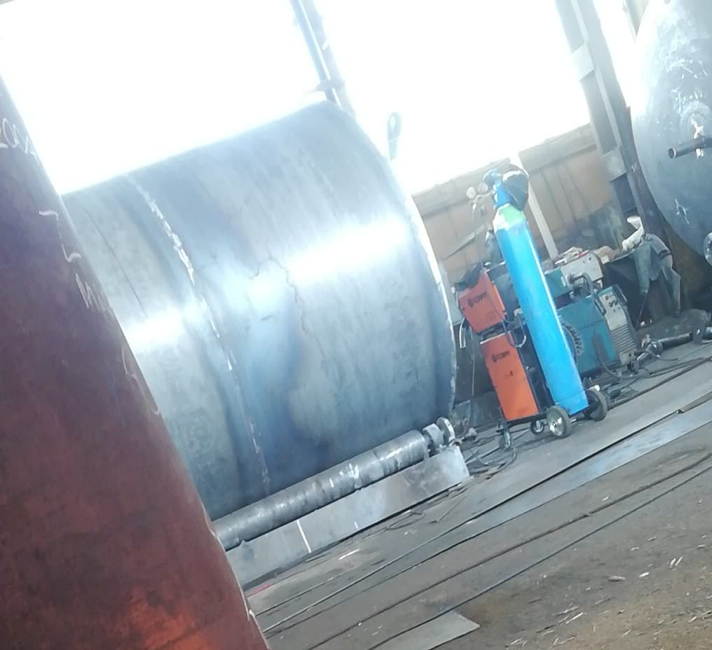

A VTech 1952-ben lett alapítva, Sanca Sandu által. A cég eredeti neve Ypsoic volt, melyet később megváltoztattak
Metal-ra, amikor Talpos felvásárolta a céget, átnevezte VTech-re. 1980-ig tartályokat hegesztettek a munkások,
melyeket a katonaságnak, illetve benzinkutaknak adtak el. Későbbiekben aztán a régióban egyre nagyobb kereslet
lett az autóalkatrészekre, melyhez a cég is alkalmazkodott oly módon, hogy autóalkatrészeket kezdett el gyártani,
és azóta is forgalmazza azokat. Az ország első számú autóalkatrész gyára, kedvező árakkal és szakképzett emberekkel.
Cégünk hatalmas választékkal rendelkezik, mely az idő előrehaladtával folyamatosan bővül. Több céggel is partneri viszonyban vagyunk,
mint például a Someta S.A., Mos Dorel. 2014 óta nem csak Romániában, hanem már Magyarországon, Svédországban, és Hollandiában is
elérhetőek termékeink.

Segítünk a termékeket installálni
Mindig a legújabb felszerelésekkel dolgozunk
Egyéni megrendelés - luxusasztalok, kisebb alkatrészek